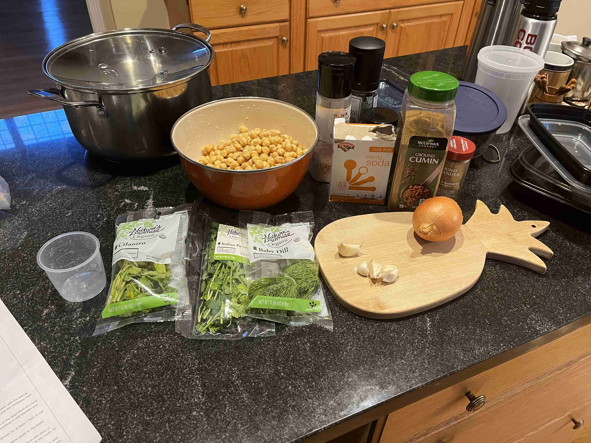
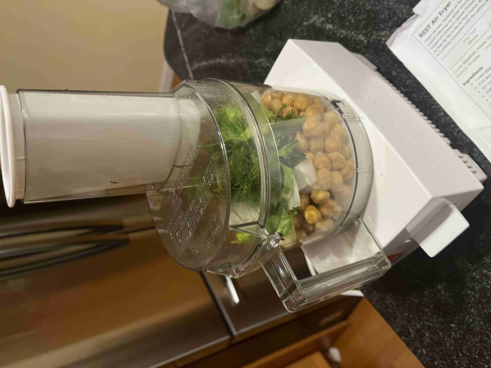
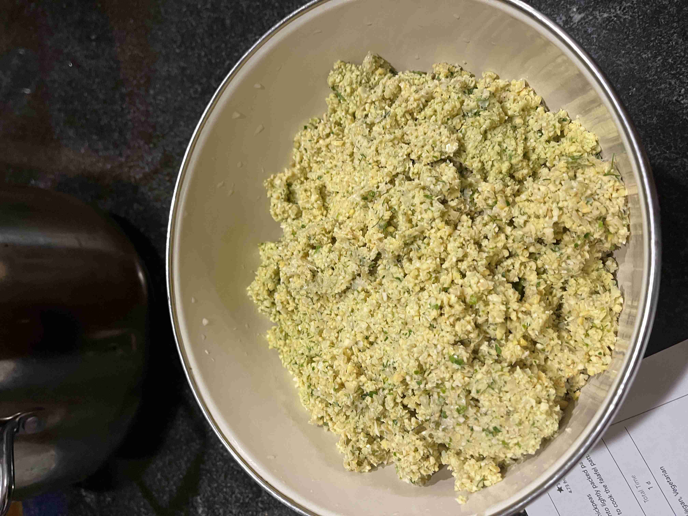
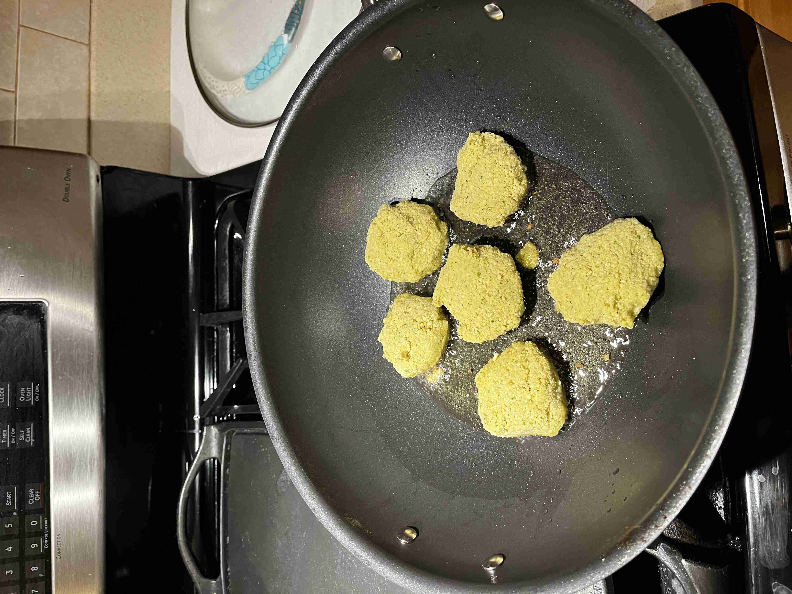
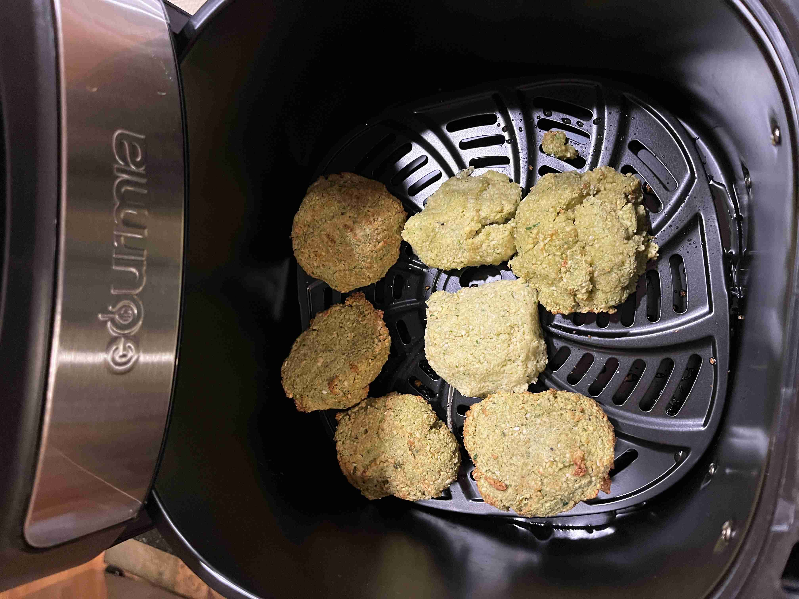

Falafel (Israel)
-
 8 servings (16 falafel)
8 servings (16 falafel)
-
 3
hours (1 day)
3
hours (1 day)
-
 Suzy Karadsheh
Suzy Karadsheh
-
 Vegan
Vegan
-
 Salty
Salty
Cooked on March 3, 2024.
My twenty-first recipe! Falafel is a popular Middle Eastern dish that is made from ground chickpeas and greens. It is usually served in a pita, which acts as a pocket, dipped in a tahini sauce or hummus. The falafel balls are topped with salads, pickled vegetables, hot sauce, and drizzled with tahini-based sauces. Falafel balls may also be eaten alone as a snack.
Rating 7/10, a very delicious and healthy meal! The falafel balls are crispy on the outside and soft on the inside. The texture is great, however, the inside is a bit bland. So, a sauce or hummus are necessary to eat alongside the falafel.
Preparation (Falafel Dough)
1 cupdried chickpeas0.5 tspbaking soda1 cupchopped parsley (stems removed)0.75 cupcilantro leaves (stems removed)0.5 cupdill (stems removed)1small onion4 clovesgarlic1 tspsalt1 tbspground cumin1 tbspground coriander2 tbspsesame seeds

Soak and cover the chickpeas in water overnight. Drain the chickpeas and let them dry for 30 minutes.

Add all ingredients into a food processor, by portioned batches if needed. Process until the mixture is finely ground and like playdough consistency when you squeeze it in your hand.

Leave dough in the fridge for 1 hour.
Frying (Air/Pan Frying)
1/3 cupcanola oil1/3 tspextra virgin olive oil1/2 tspbaking soda
Add baking powder to the mix and stir with spoon vigoruously.
Form falafel patties (2 inches in diameter, 0.5 inches thick). Set aside.
Heat a large skillet or pan with vegetable oil over medium heat. At the same time, pre-heat an air fryer to 400°F.

Once heated, fry the patties in batches so that a crispy layer forms on the top and the bottom of the patties. Remove from pan.
Immediately, transfer to air fryer to cook for 5-10 minutes, or until all edges are browned.

Serve while hot with hummus, pita bread, or tahini sauce. Enjoy!